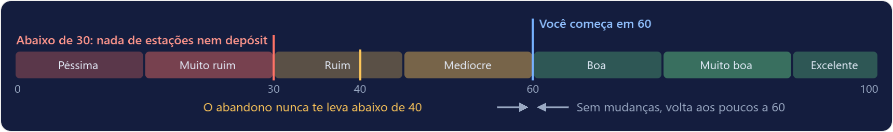

Prefeituras
O que a prefeitura pensa de você e por que isso importa.
A prefeitura de cada cidade avalia todas as empresas de 0 a 100. Uma prefeitura que perdeu a paciência impede você de construir na cidade.


O que muda sua avaliação
| Mudança | Por quê |
|---|---|
| +2 por mês | Cada estação sua perto da cidade onde um veículo parou no último mês, para carregar ou entregar. No máximo +6 por mês. |
| -1 por mês | Cada estação que tinha serviço e não vê nenhum veículo há 90 dias. Só isso nunca te leva abaixo de 40. |
| -8 | Cada edifício da cidade que você demole. |
| -3 | Cada quadrado das ruas da cidade que você arranca. |
| -20 | Por acidente ferroviário a menos de 18 quadrados do centro da cidade mais próxima, para cada empresa envolvida. |
| -0,5 | Cada quadrado de árvores que você corta dentro ou logo em volta da cidade, no máximo -6 de uma vez. |
| 1,5 por mês | Sem mudanças, a avaliação volta aos poucos a 60: duas vezes mais rápido enquanto a prefeitura te recusa. |
- Estradas e matas no campo não são assunto da prefeitura.
- A janela da cidade mostra sua avaliação e lista o que a mudou ultimamente.
- Cumprir o pedido da prefeitura pode dar um grande impulso: veja Subsídios e pedidos.
Reconquistá-la
| Na janela da cidade | Preço | Avaliação | E também |
|---|---|---|---|
| Fazer publicidade | $ 9.000 | +4 | Por 60 dias, suas estações na cidade ganham +15% nas avaliações. |
| Plantar árvores | $ 4.000 | +7 | Até 30 árvores em volta da cidade, o que também aumenta o valor do terreno. |
| Financiar edifícios | $ 40.000 | +3 | A cidade cresce rápido por 120 dias. |